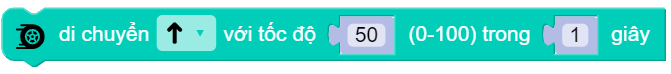
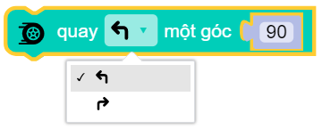
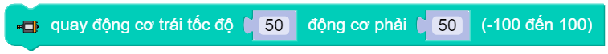
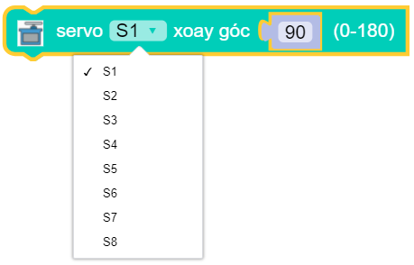
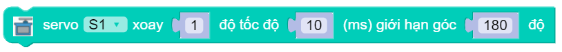

Các khối lệnh “Di chuyển”¶
robot.forward|backward|turn_left|turn_right(speed)¶

Điều khiển xBot di chuyển tiến về phía trước/sau/trái/phải, trong đó speed là tốc độ quay của động cơ với phạm vi tham số là 0 ~ 100.
robot.forward|backward|turn_left|turn_right(speed, t = None)¶
{kind=link}
Điều khiển xController di chuyển lui về trước/sau/trái/phải trong khoảng thời gian time, trong đó:
speed tốc độ quay của động cơ với phạm vi tham số là
0 ~ 100.t Giá trị của thời gian chuyển động, tính bằng
giây. Nếu thông số này không được thiết lập, trạng thái tiến được duy trì cho đến khi có lệnh dừng chuyển động hoặc lệnh chuyển động mới.
robot.turn_right_angle|turn_left_angle(angle)¶
{kind=link}
Điều khiển xBot di chuyển rẽ qua phải/trái một góc angle với tốc độ speed, trong đó angle là góc cần xoay với phạm vi tham số là 0 ~ 360.
robot.set_wheel_speed(speed_1, speed_2)¶
{kind=link}
Điều khiển tốc độ độc lập của 2 động cơ M1 và M2, trong đó:
speed_1 là tham số tốc độ của động cơ M1.
speed_2 là tham số tốc độ của động cơ M2.
speed_1 và speed_2 có phạm vi tham số là
-100 ~ 100. Số âm và số dương biểu thị chiều quay của động cơ.
{kind=link}
servo.position(index, degree)¶
{kind=link}
Điều khiển động cơ servo 180 độ quay tới một góc nào đó tức thời. Trong đó:
index là tham số có giá trị
0 ~ 7tương ứng với 8 cổng gắn servo trên board xController.degree là tham số góc quay của servo có giá trị
0 ~ 180độ.
servo.rotate(index, change, sleep, degree)¶
{kind=link}
Điều khiển động cơ servo 180 độ quay tới một góc tới hạn degree với thời gian nghỉ sleep sau mỗi bước di chuyển change. Trong đó:
index là tham số có giá trị
0 ~ 7tương ứng với 8 cổng gắn servo trên board xController.change là tham số 1 bước di chuyển tới góc mới của servo. Là giá trị số có giá trị từ
0đến(degree/change).changecó giá trị càng nhỏ thì servo chuyển bước cằng mượt.sleep là thời gian nghỉ giữa mỗi bước
changecó đơn vị làmili giây.degree là tham số góc quay tới hạn của servo có giá trị
0 ~ 180độ.
servo.spin(index, speed)¶
{kind=link}
Điều khiển động cơ servo 360 độ quay với tốc độ speed. Trong đó:
index là tham số có giá trị
0 ~ 7tương ứng với 8 cổng gắn servo trên board xController.speed là tốc độ quay của servo 360 độ với phạm vi tham số là
-100 ~ 100. Số âm và số dương biểu thị chiều quay của động cơ.
servo.position(index)¶
{kind=link}
Trả về giá trị góc hiện tại của servo. Trong đó index là tham số có giá trị 0 ~ 7 tương ứng với 8 cổng gắn servo trên board xController.
{kind=link}
{kind=link}